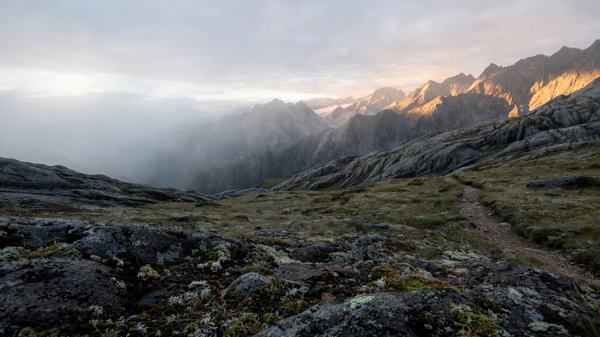

OUT THERE IS WHERE WE BELONG.01 /
ALL CONDITIONS
TECHNICAL APPAREL. EVERYDAY EXPLORATION.
Built for
outside.
Considered layers for unconsidered routes.
From the first light to the last mile.
THE FIELD SYSTEM — COLLECTION 01SCROLL TO
EXPLORE
Made to move.Designed to layer.Ready for the unknown.
YOUR NEXT GO-TO
The field system.
Four essentials. One adaptable system. Find your own way out.
A DIFFERENT PERSPECTIVE / ALWAYS OUTSIDE
OUR APPROACH
Less, but
better equipped.
We believe good gear should feel as natural on a city street as it does above the treeline. Clean lines. Thoughtful details. Nothing you don't need.
Verycoolapparel is an invitation to take the longer route. To step outside. To see what happens next.
Get out there